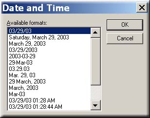

The next step in creating your document is to implement the date and time function into your document.
You can begin by clicking on the "Insert" function on the menu screen, above the tool bar and then click on "Date and Time" in the drop down list.

Pick one of the "available formats" from the list and then click "OK".
At this point you should see the date and or time that you choice displayed on your document. Be sure to place your curser wherever it is that you would like your date and time information to be displayed.